Explore Katowice
A Brief History
Katowice grew from rural hamlets into the capital of the Silesian industrial district after coal and zinc mining accelerated in the nineteenth century under Prussian then Polish administration. Miners' colonies, neo-Gothic churches, and the Spodek arena express successive waves of German, Polish, and Silesian identity. Post-1989 investment turned the conurbation toward services and culture while headframes and workers' estates still record Upper Silesia's role in European heavy industry.
Attractions Map
Top Sights & Activities
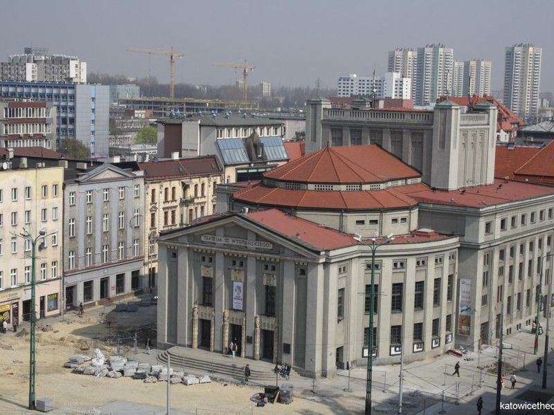
Market Square in Katowice
The Market Square in Katowice, Poland is a blend of historic and modern architecture, surrounded by a wide contemporary plaza with tram lines crisscrossing through it. Recently revamped, this large space in the heart of the city center is a popular meeting place for locals and hosts various events such as concerts, fairs, children's activities, and food truck rallies. During summer months, the square features exotic five-meter-high palm trees that provide shade to travellers.
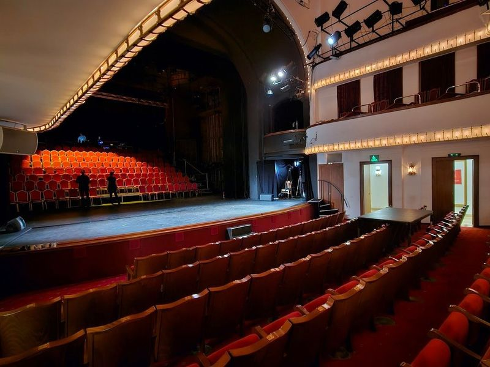
Silesian Theatre
in the heart of Katowice, the Silesian Theatre is a cultural gem that beautifully marries history with contemporary flair. Established in 1907, this neoclassical venue stands proudly at Market Square alongside 19th-century tenements and modern establishments. As Upper Silesia's largest drama stage, it showcases an impressive repertoire that spans from classic literature to innovative contemporary works.
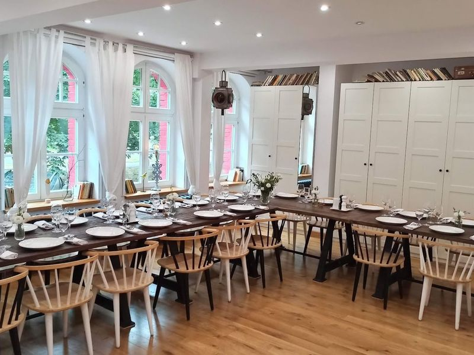
Nikiszowiec Historic Mining District
Nikiszowiec Historic Mining District, built in 1908 for miners working in the nearby coal mine, exudes a unique charm. The district features dark red-brick buildings with bright red windows, creating a distinctive character. Located on the Industrial Monuments Route of the Silesian Voivodeship, it offers an opportunity to admire its architecture and experience local atmosphere.
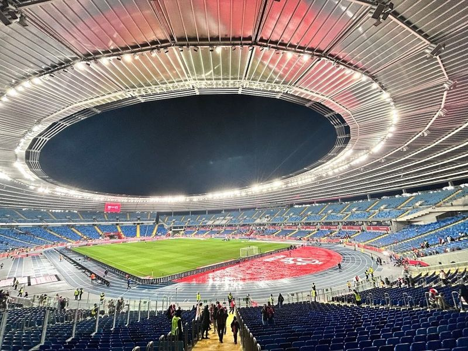
Silesian Stadium
Śląski Stadium, located in Chorzow, Poland, is a 1950s-built all-seater stadium with a maximum capacity of 55,211. It serves as the home ground for the Polish national football team and hosts various sports events and music concerts. travellers can take guided tours of the stadium at affordable prices. The venue has been praised for its efficient handling of large crowds during events, although some have noted that the catering can be expensive and of low quality.
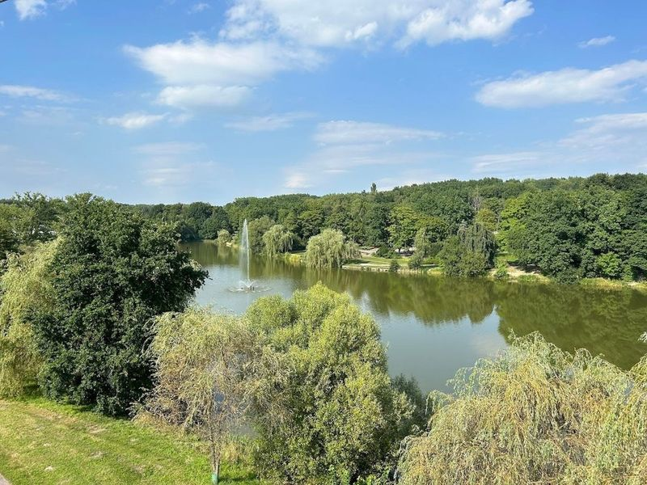
Silesia Park
between Chorzow and Katowice, Silesia Park is a sprawling 620-acre nature haven that offers an abundance of activities for travellers. This expansive green space is nearly double the size of New York's Central Park, making it a must-visit destination in the Upper-Silesian Metropolis. Here, immerse yourself in nature while exploring scenic forest trails, tranquil ponds, and diverse wildlife.
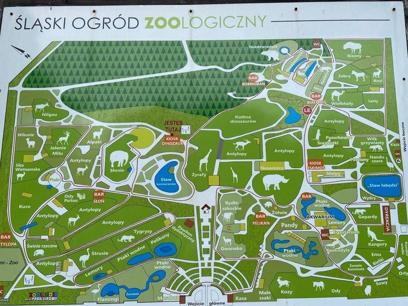
Silesian Zoological Park
Silesian Zoological Park, located within the Silesian Culture and Recreation Park, is a sprawling sanctuary for over 2500 animals. Divided into wild and domesticated sections, the zoo also features replica dinosaurs. The park itself spans 2 km east-west and 3 km north-south, offering free access around the clock and welcoming dogs.
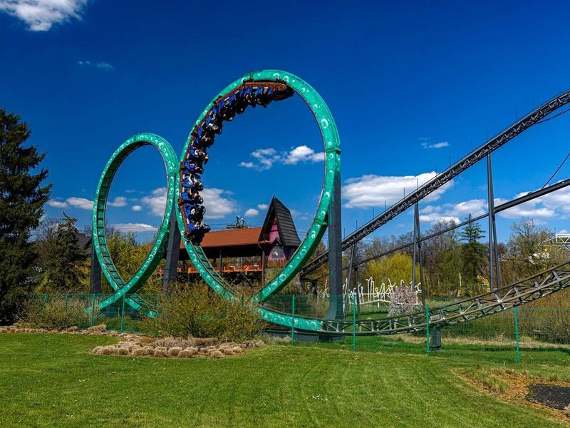
Legendia Silesian Amusement Park
Legendia Silesian Amusement Park, the oldest amusement park in Poland, offers around 38 attractions including rollercoasters and rides suitable for younger children. The park provides a well-balanced experience with minimal queues during weekdays, making it convenient to explore all it has to offer in one day. travellers can enjoy on-site restaurants and themed areas like Aladdin's Magicland.
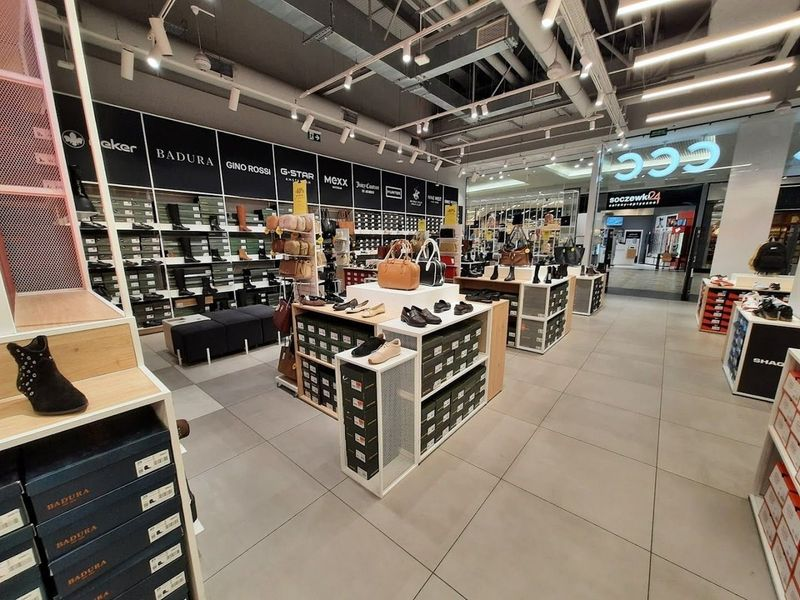
Silesia City Center
Silesia City Center is a bustling shopping destination that caters to a wide range of tastes and preferences. The mall features an array of department stores, boutiques, and health and beauty services, making it an energetic hub for shoppers. travellers can take advantage of the diverse food options available within the center to refuel after a day of retail therapy. The luxurious interior adds to the overall appeal, attracting travellers of all ages and backgrounds.
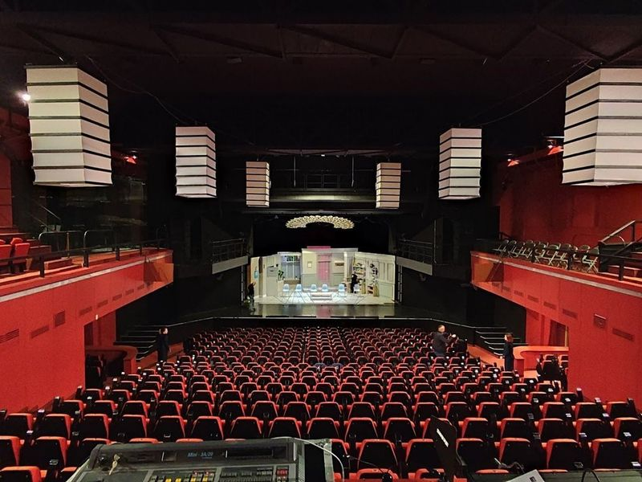
Teatr Rozrywki
The Teatr Rozrywki is an exceptional theater, offering shows of remarkable quality and meticulous attention to detail. The theater hall provides a comfortable viewing experience with its cozy armchairs. The staff exudes professionalism and creates a positive atmosphere throughout the establishment. Renowned as theaters in Silesia, it promises a superlative performance that is recommended for all lovers of the performing arts.
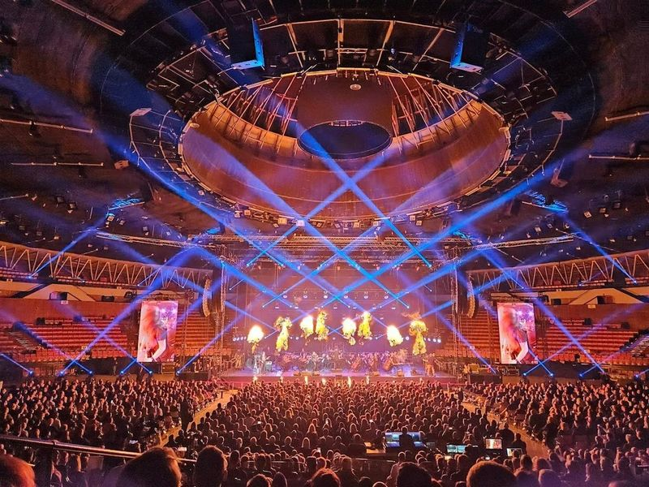
Arena Spodek
Arena Spodek, often likened to a UFO due to its flying saucer-shaped design, is a renowned indoor arena in Katowice. Situated near Mariacka Street and the Silesian Museum, it stands out as one of the city's most distinctive spaces with its futuristic and minimalist vibe. Once an operational coal mine, it now hosts various cultural and sporting events, including rock concerts and basketball games.
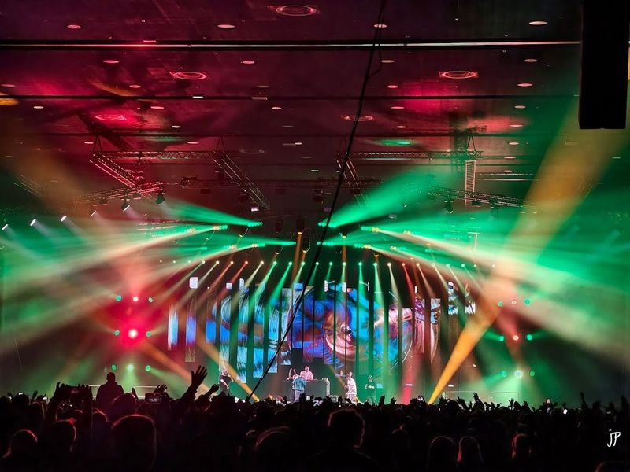
Katowice International Conference Centre
The Katowice International Conference Centre, designed by the renowned architectural studio Jems Architekci, is situated in the former industrial areas and pays homage to mining traditions. As part of the Culture Zone in Katowice, it offers a direct connection to Spodek and is known for its spacious and flexible rooms. The center has received praise for its cleanliness, ample restroom facilities, and free parking.
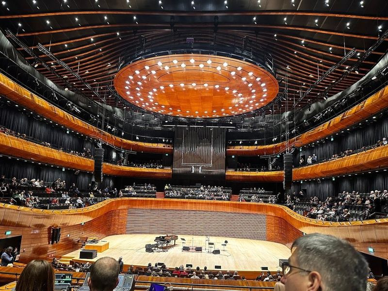
National Polish Radio Symphony Orchestra
The National Polish Radio Symphony Orchestra, located in Katowice, is a renowned orchestra that was established in 1945. It has gained recognition for its diverse repertoire, ranging from Baroque to contemporary music. The orchestra frequently tours internationally and has performed at prestigious venues worldwide. The NOSPR's new seat, operational since 2014, is an architectural marvel designed by Tomasz Konior with a cost of USD80 million.
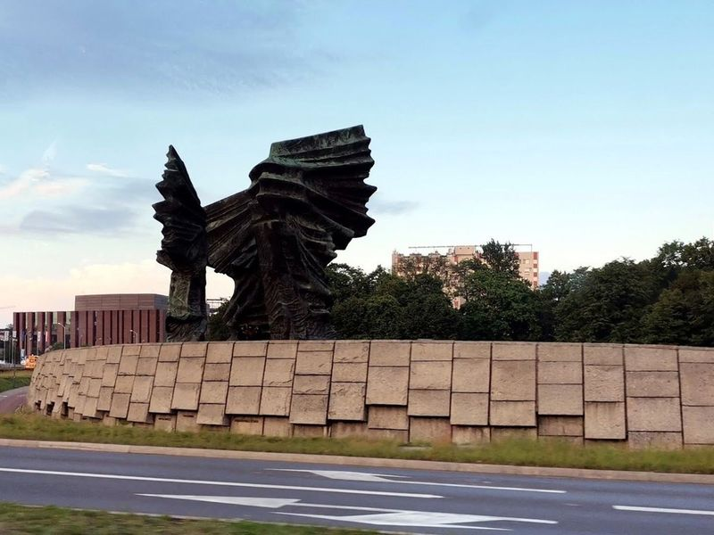
Silesian Insurgents' Monument
The Silesian Insurgents' Monument, completed in 1957, is a striking memorial dedicated to the participants of the Silesian Uprisings that took place between 1919 and 1921. Situated near the Culture Zone, this colossal structure consists of three bronze wings, each representing one of the uprisings. The monument was unveiled more than 50 years ago and stands on the former site of a cemetery.
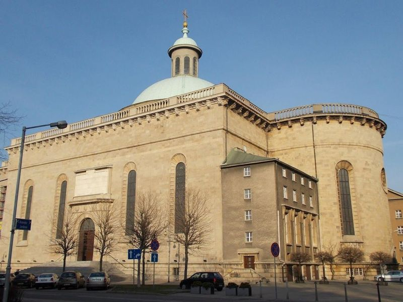
Archcathedral of Christ the King, Katowice
The Archcathedral of Christ the King in Katowice is the largest cathedral in Poland, with construction spanning from 1927 to 1955. Its Neoclassical architecture features a striking 40-meter-high dome and an impressive portico. The structure is modern, built with reinforced concrete and clad with dolomite from nearby quarries. The cathedral's significance in Katowice's urban landscape cannot be overstated, and it is considered the second largest church in Poland.
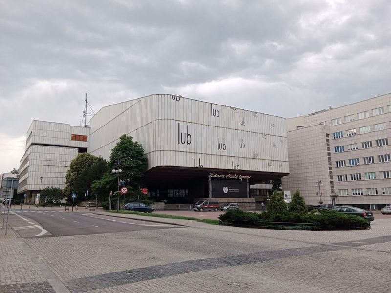
Teatr Korez
Teatr Korez is an exceptional performing arts theater in Poland that offers a remarkable selection of shows and plays from all parts of the country. It comes recommended for those seeking top-notch actors, extraordinary performances, and enjoyable entertainment. The venue boasts a friendly atmosphere and is renowned for its comedic productions which provide amusement.
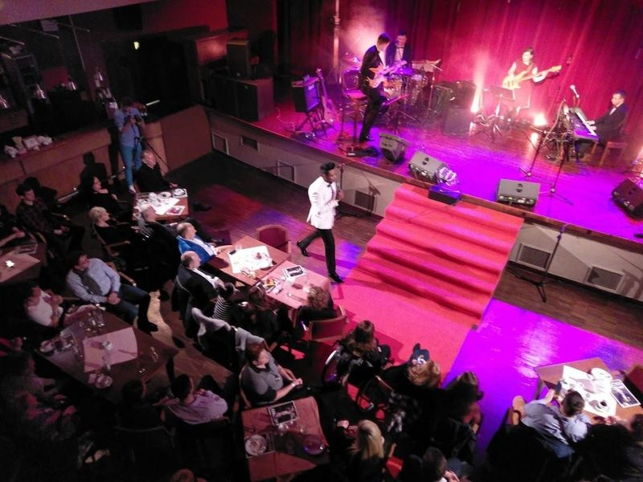
Kinoteatr Rialto
in the heart of Katowice, Kinoteatr Rialto is a artist-run venue that offers a unique blend of independent films and live music. This eclectic cinema stands out for its carefully curated repertoire, showcasing both alternative and mainstream movies that won't find in typical commercial theaters.
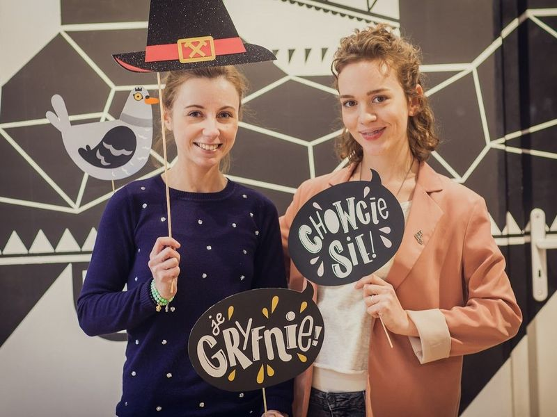
Gryfnie
If find yourself wandering the streets of Katowice and are on the hunt for that perfect gift, look no further than Gryfnie. This shop is a treasure trove of unique items that celebrate Silesian culture, offering everything from quirky T-shirts and sweatshirts adorned with humorous local phrases to an array of coal products, books, calendars, and magnets.
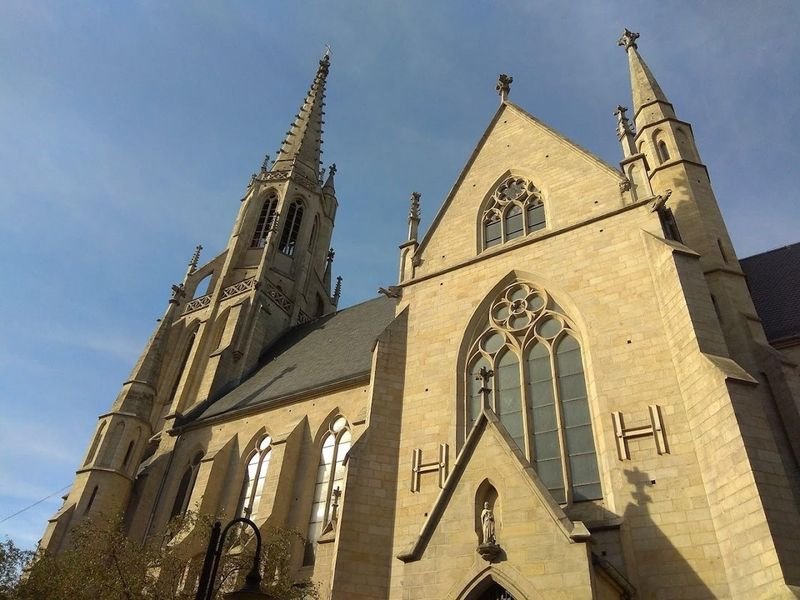
Immaculate Conception of the Blessed Virgin Mary
The Archcathedral of Christ the King in Katowice is the largest cathedral in Poland, with construction spanning from 1927 to 1955. Its Neoclassical architecture features a striking 40-meter-high dome and an impressive portico. The structure is modern, built with reinforced concrete and clad with dolomite from nearby quarries. The cathedral's significance in Katowice's urban landscape cannot be overstated, and it is considered the second largest church in Poland.
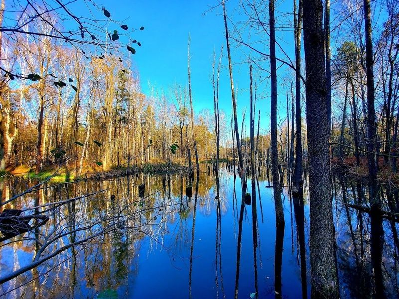
Valley of the Three Ponds
Valley of the Three Ponds is a vast park in Katowice, offering a variety of activities for travellers. The park features forest trails, bike routes, and ponds suitable for water sports and fishing. It is surrounded by the Murckowski Forest and Kosciuszko Park, providing a serene environment with perfect flowerbeds. travellers can enjoy cycling, rollerblading, or leisurely walks in this expansive area.